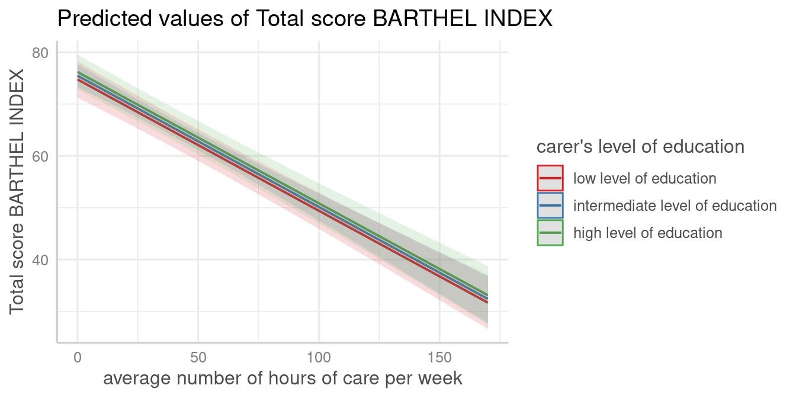
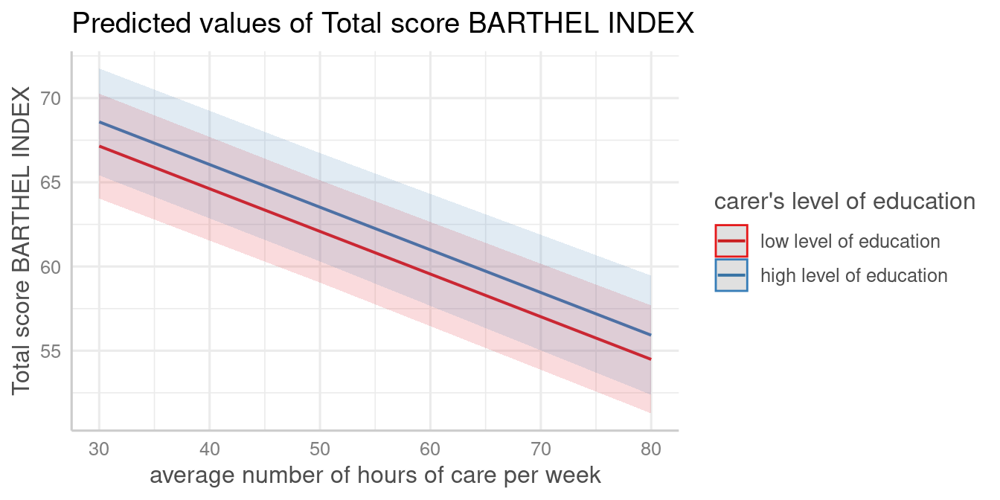
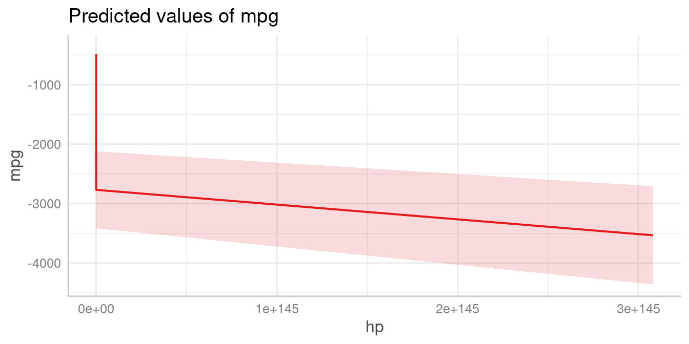

Plotting Marginal Effects of Regression Models
Daniel Lüdecke
2024-08-28
Source:vignettes/plot_marginal_effects.Rmd
plot_marginal_effects.RmdThis document describes how to plot marginal effects of various
regression models, using the plot_model() function.
plot_model() is a generic plot-function, which accepts many
model-objects, like lm, glm, lme,
lmerMod etc.
plot_model() allows to create various plot tyes, which
can be defined via the type-argument. The default is
type = "fe", which means that fixed effects (model
coefficients) are plotted. To plot marginal effects, call
plot_model() with:
-
type = "pred"to plot predicted values (marginal effects) for specific model terms. -
type = "eff", which is similar totype = "pred", however, discrete predictors are held constant at their proportions (not reference level). It internally calls via . -
type = "emm", which is similar totype = "eff". It internally calls via . -
type = "int"to plot marginal effects of interaction terms.
To plot marginal effects of regression models, at least one model term needs to be specified for which the effects are computed. It is also possible to compute marginal effects for model terms, grouped by the levels of another model’s predictor. The function also allows plotting marginal effects for two- or three-way-interactions, however, this is shown in a different vignette.
plot_model() supports labelled data
and automatically uses variable and value labels to annotate the plot.
This works with most regression modelling functions.
Note: For marginal effects plots, sjPlot calls functions from the ggeffects-package. If you need more flexibility when creating marginal effects plots, consider directly using the ggeffects-package.
Marginal effects
plot_model(type = "pred") computes predicted values for
all possible levels and values from a model’s predictors. In the
simplest case, a fitted model is passed as first argument, followed by
the type argument and the term in question as
terms argument:
library(sjPlot)
library(ggplot2)
data(efc)
theme_set(theme_sjplot())
fit <- lm(barthtot ~ c12hour + neg_c_7 + c161sex + c172code, data = efc)
plot_model(fit, type = "pred", terms = "c12hour")
The plot shows the predicted values for the response at each value from the term c12hour.
Marginal effects for different groups
The terms-argument accepts up to three model terms,
where the second and third term indicate grouping levels. This allows
predictions for the term in question at different levels for other model
terms:
plot_model(fit, type = "pred", terms = c("c12hour", "c172code"))
A second grouping structure can be defined, which will create a plot with multiple panels in grid layout:
plot_model(fit, type = "pred", terms = c("c12hour", "c172code", "c161sex"))Marginal effects at specific values or levels
The terms-argument not only defines the model terms of
interest, but each model term that defines the grouping
structure can be limited to certain values. This allows to compute
and plot marginal effects for terms at specific values only. To define
these values, put them in square brackets directly after the term name:
terms = c("c12hour [30, 50, 80]", "c172code [1,3]")
plot_model(fit, type = "pred", terms = c("c12hour [30, 50, 80]", "c172code [1,3]"))
Note that in the above plot, although the values 30, 50 and 80 only are selected from c12hour, the continuous scale automatically adds panel grids every 5 units along the x-axis.
Defining own values is especially useful when variables are, for
instance, log-transformed. plot_model() then typically only
uses the range of the log-transformed variable, which is in most cases
not what we want. In such situation, specify the range in the
terms-argument.
data(mtcars)
mpg_model <- lm(mpg ~ log(hp), data = mtcars)
# x-values and predictions based on the log(hp)-values
plot_model(mpg_model, type = "pred", terms = "hp")
# x-values and predictions based on hp-values from 50 to 150
plot_model(mpg_model, type = "pred", terms = "hp [50:150]")The brackets in the terms-argument also accept the name
of a valid function, to (back-)transform predicted valued. In this
example, an alternative would be to specify that values should be
exponentiated, which is indicated by [exp] in the
terms-argument:
# x-values and predictions based on exponentiated hp-values
plot_model(mpg_model, type = "pred", terms = "hp [exp]")
Polynomial terms and splines
The function also works for models with polynomial terms or splines.
Following code reproduces the plot from ?splines::bs:
library(splines)
data(women)
fm1 <- lm(weight ~ bs(height, df = 5), data = women)
plot_model(fm1, type = "pred", terms = "height")
Different constant values for factors
Model predictions are based on all possible combinations of the model
terms, which are - roughly speaking - created using
expand.grid(). For the terms in question, all values are
used for combinations. All other model predictors that are not
specified in the terms-argument, are held constant (which
is achieved with sjstats::typical_value()). By default,
continuous variables are set to their mean, while factors are set to
their reference level.
data(efc)
efc$c172code <- sjlabelled::as_factor(efc$c172code)
fit <- lm(neg_c_7 ~ c12hour + c172code, data = efc)
# reference category is used for "c172code", i.e. c172code
# used the first level as value for predictions
plot_model(fit, type = "pred", terms = "c12hour")
However, one may want to set factors to their proportions
instead of reference level. E.g., a factor gender with value 0
for female and value 1 for male persons, would be set to 0
when marginal effects are computed with type = "pred". But
if 40% of the sample are female persons, another possibility to hold
this factor constant is to use the value .4 (reflecting the
proportion of 40%). If this is required, use type = "eff",
which internally does not call predict() to compute
marginal effects, but rather effects::effect().
# proportion is used for "c172code", i.e. it is set to
# mean(sjlabelled::as_numeric(efc$c172code), na.rm = T),
# which is about 1.9715
plot_model(fit, type = "eff", terms = "c12hour")
Interaction terms
Plotting interaction terms are described in a separate vignette.